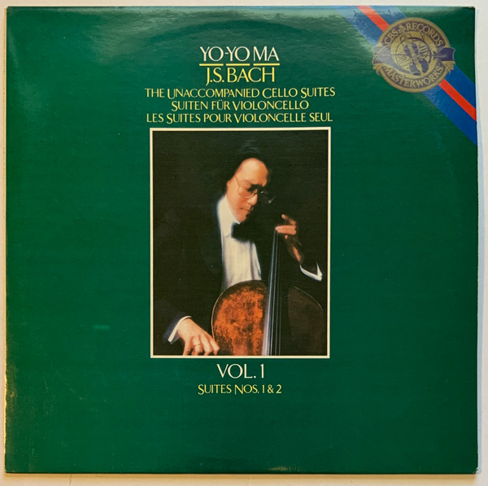

LP
The Unaccompanied Cello Suites / Suiten Für Violoncello / Les Suites Pour Violoncelle Seul - Vol. 1, Suites Nos. 1 & 2
Johann Sebastian Bach, Yo-Yo Ma
Media: — · Sleeve: —
—
Personal
Discogs SuggestedCA$42.52
Discogs MedianCA$42.52
Discogs HighCA$42.52
- Physical Copy ID
- BB-LP-161
- Year
- 1983
- Label
- CBS Masterworks
- Catalog #
- IM 39345
- Country
- KRSouth Korea
- Genre / Style
- Classical · Baroque